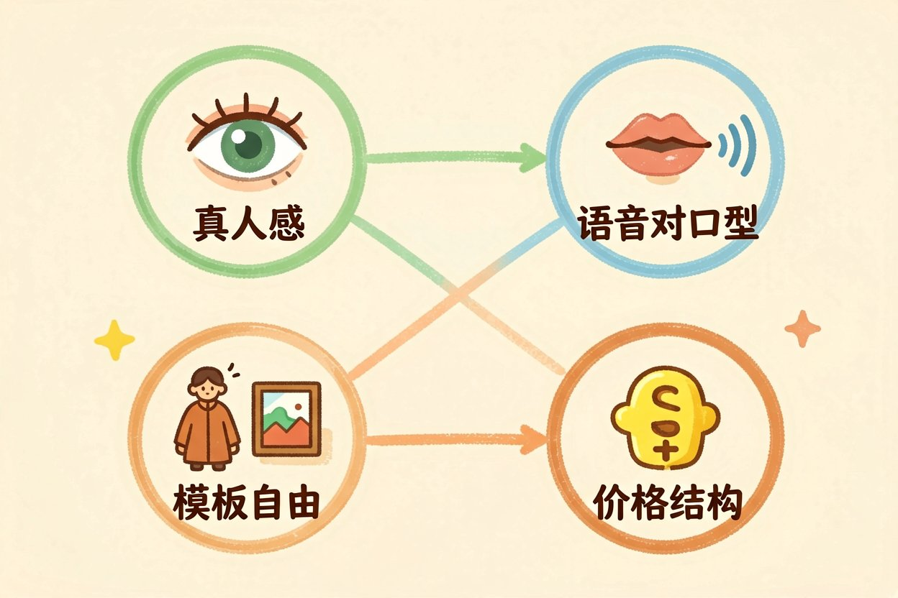
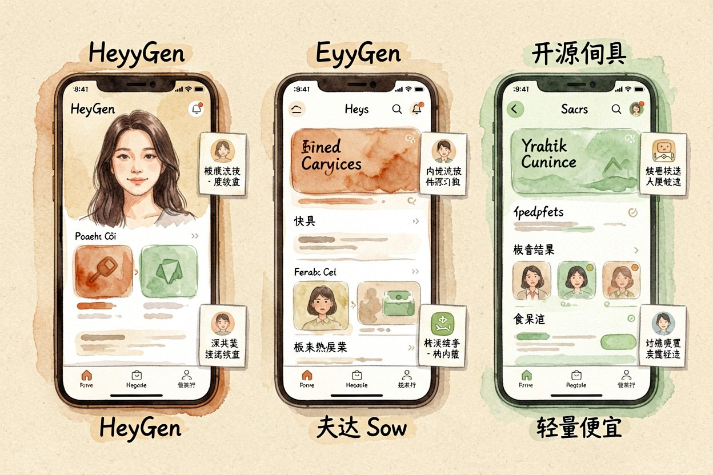
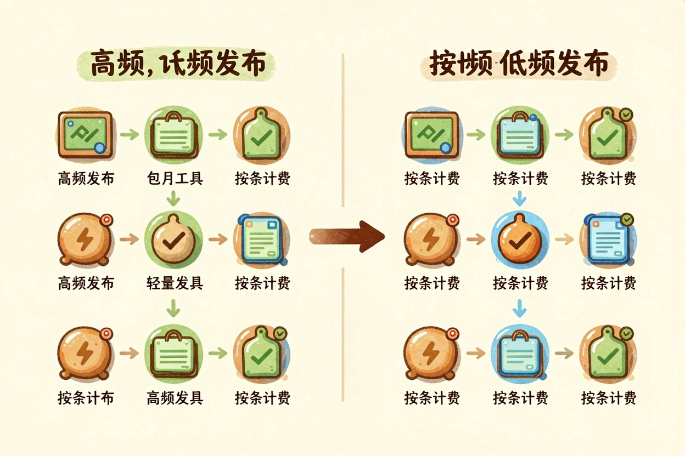
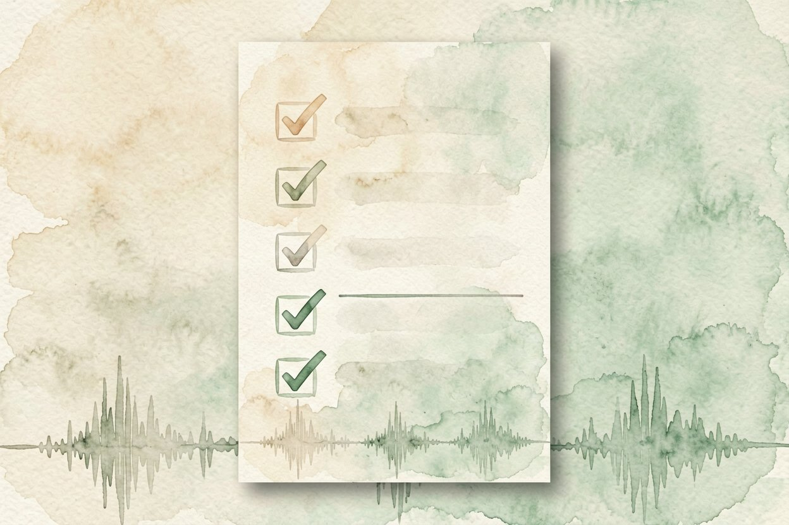
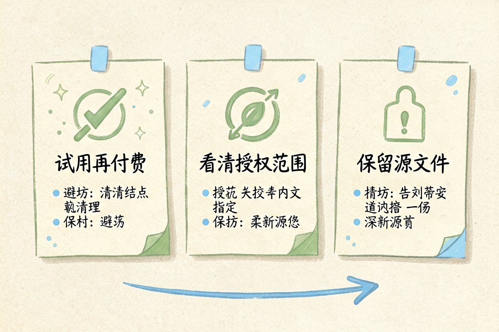

AI 数字人视频工具怎么选：4 个维度对比
不想真人出镜又想做口播？让虚拟主播替你讲话出镜，这条路现在普通人也能走通。
先说结论：三类人分别选谁做 AI 数字人视频
AI 数字人视频，就是生成一个虚拟主播，把文案念出来并对口型出镜，你不用自己上镜。选谁不看出名与否，看你手上是什么活。
做跨境或外语口播的人，选嘴型和多语种强的；做国内短视频的人，选模板多、换装快的；只想偶尔发一条的人，选按条计费、不绑订阅的。
它和AI 视频生成原理同源，但数字人重在「人脸稳定 + 对口型」，比通用视频生成更挑人物一致性。先想清你是哪类人，再往下看维度。
四个对比维度

第一维真人感。皮肤和眼神是否自然，笑起来僵不僵。这是观众三秒划走与否的关键。
第二维语音对口型。发音和嘴形对不对得上，方言和外文准不准。对不上的廉价感最强。
第三维模板自由。能不能换衣服、换场景、用自己的头像。被模板绑死，内容就雷同。
第四维价格结构。按条、包月、还是按分钟。量级不同，谁划算完全不同。
把下面需求发给任意 AI，让它帮你初筛：
我每周发 3 条中文口播，预算每月 200 元以内，
需要能换 3 套衣服，不要求外语。请推荐 2 个工具并说理由。主流工具逐一点评

HeyGen 类工具真人感强、多语种好，适合出海口播，价格偏高。详细看HeyGen 数字人测评。
国内大厂系胜在模板多、换装快、中文对口型稳，日常短视频够用，自由度一般。
开源或轻量工具便宜甚至免费，但需要你自己搭环境、调头像，AI 头像生成能补素材，适合爱折腾的人。
做口播后通常还要切片分发，流程和AI 长视频切片能接上，一条母片变多条短视频。
怎么组合最省

高频发布就包月主力 + 轻量工具补位，低频偶尔发就纯按条，别为一年用几次去开年费。
把数字人当出镜替身，文案和选题还得你自己想。工具只解决「谁来讲」，讲什么它替不了。
各家免费额度和订阅价都在变，掏钱前去官网定价页扫一眼，别凭记忆下单。
新手避坑清单
先试用再付费。多数工具给免费额度，拿你的真实文案跑一条，对口型和质感心里才有数。
看清授权范围。生成的视频能不能商用、能不能去掉水印，条款里写清楚，别事后被卡。
保留源文件。头像、文案、工程文件都存一份，平台改版或下架，你还能在别处重新渲染。
另外，别被「永久版」噱头带偏，很多按量计费反而更适合低频用户，先算清自己每月用量再选档位。
AI 数字人视频只是出镜的替身，别指望它替你想文案。它帮你省下上镜的心理负担，但内容到底有没有人看，决定权还在你手里。


本文信息核对于 2026-08-14。AI 产品的价格、免费额度与功能变动频繁，实际以各工具官网当前说明为准。